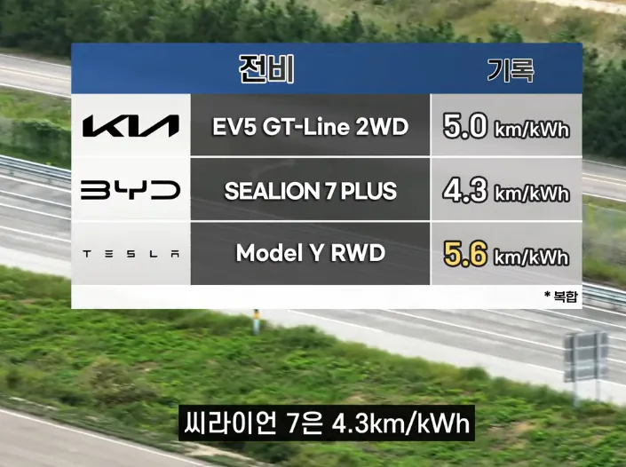
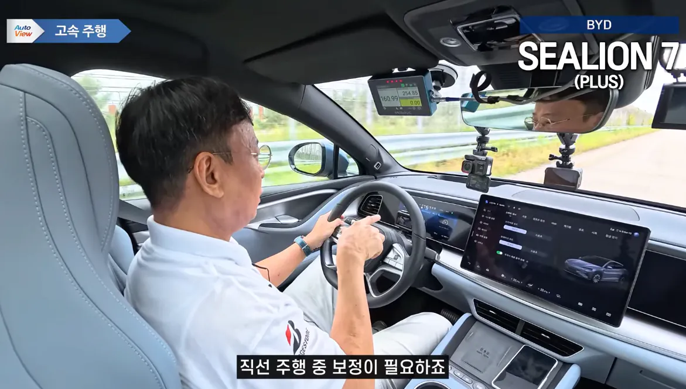
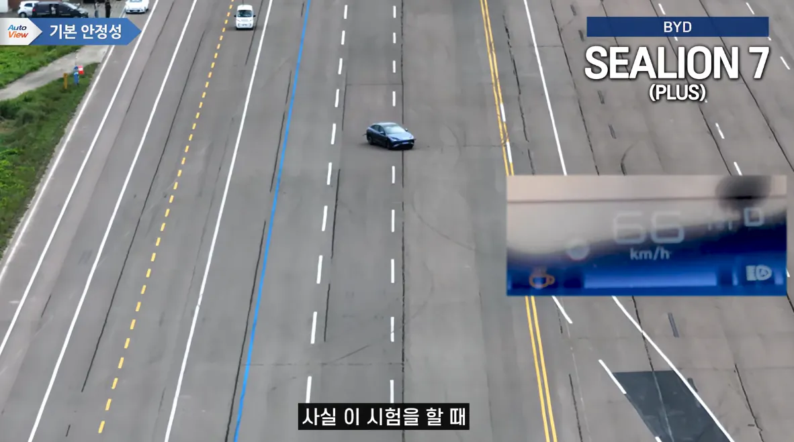
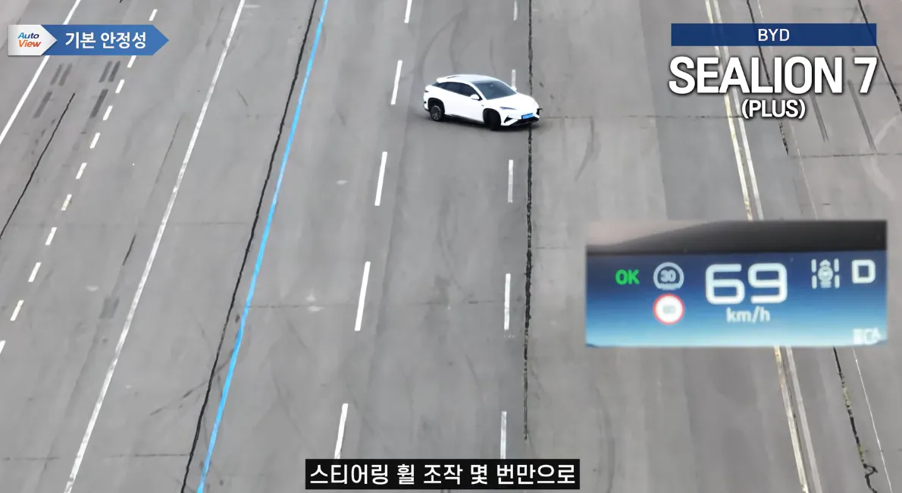
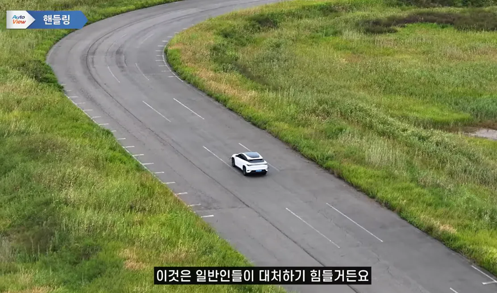
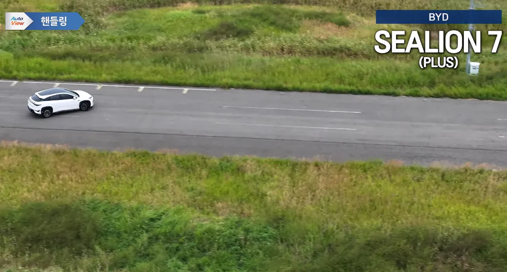
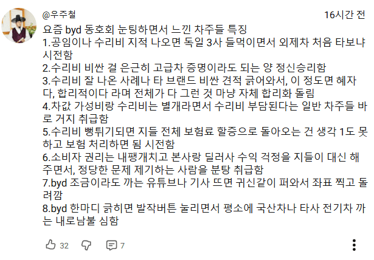

전비: 동급 경쟁차종에 비해 한 없이 낮음. 배터리 용량으로 주행거리 커버중





주행 및 핸들링: 곡선, 긴급회피시 뒤 확 털리고 좆됨. 테스터도 쫄아서 천천히 가고 일반인은 대처하기 힘들 가능성이 큼
비교차량인 EV5와 모델Y는 모두 무난하게 통과

그래서 잘못 사신 분들은
마음이 중국인 됨
돌핀은 가성비에 동일 차튜버의 평가가 훌륭했던 반면
씨라이언은 뭔가 많이 잘못돼있음
근데 기본기보다 옵션 좋은차를 선호하는 한국인 입장에선 byd가 합리적인 선택인거 아님?? 가격대비 내장재 좋은거말곤 byd가 뛰어난데 없는데??